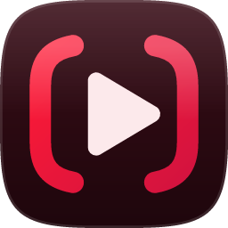
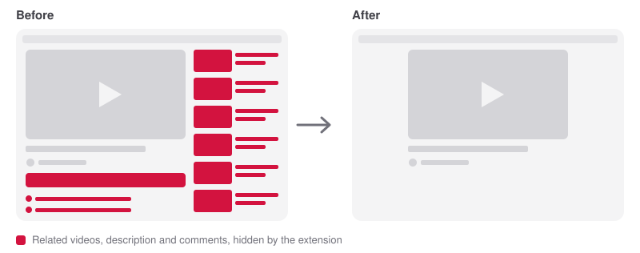
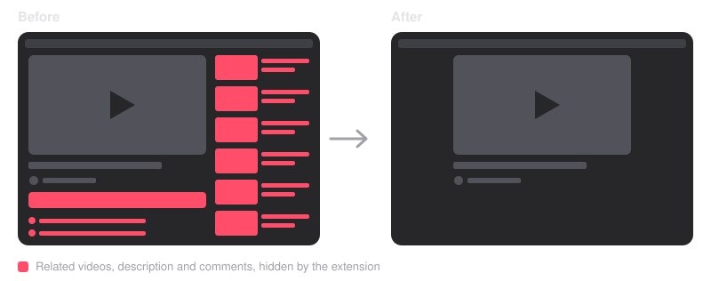

No Distractions for YouTube
Watch the video you came for. The rest stays tucked away.
Free · open source · no tracking · not affiliated with YouTube


🚀 Install in a minute
You'll get one folder.
Open chrome://extensions, switch is at the top right.
Choose the unzipped folder. That's it.
📌 Pin it from the puzzle-piece icon in Chrome's toolbar. Works in Edge, Brave, Opera and Vivaldi too.
🙈 What it tucks away
The column beside the player. The video moves to the center.
The section below the video.
Rows, single Shorts in search, and the menu entry.
The box under the title.
The cards and suggestion grid as a video ends.
The Explore menu, and Home's "Explore more topics" row.
Each has its own switch. Master turns them all off, or pauses them for 15 minutes, an hour or until tomorrow morning, after which they come back by themselves. A small, quiet badge in the corner of YouTube shows what's tucked away; it stays dull until you hover it, and you can hide it.
🔒 Safe by design
- Runs only on youtube.com
- Its only permission is saving your settings
- No network requests, no tracking, nothing collected
🙋 Something broken? Got an idea?
YouTube changes its page often, so reports keep this working.